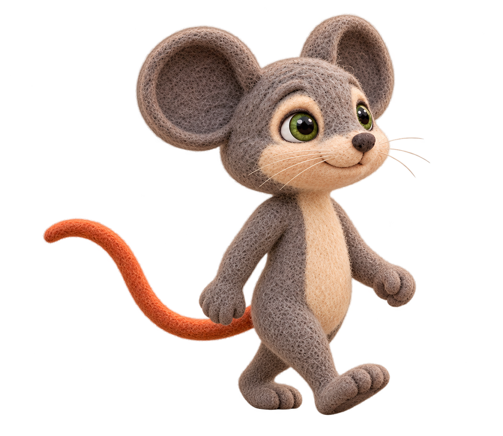
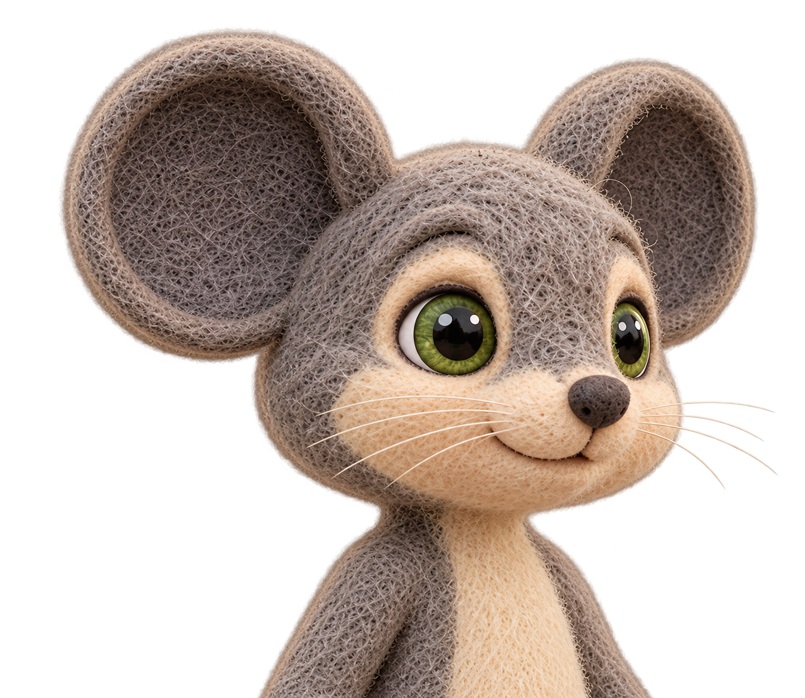
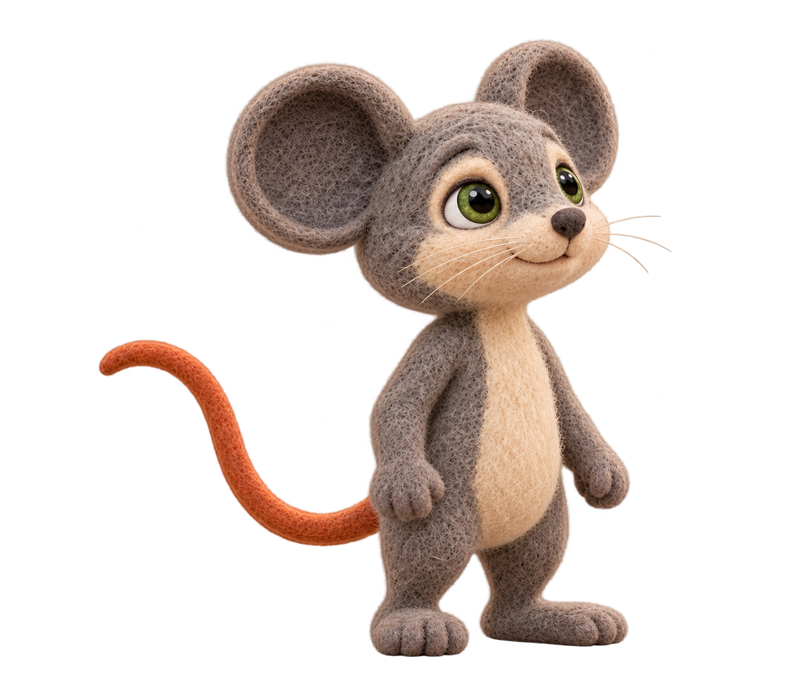

Original three foundation requests completed. Walking preview now shows the separately authorized r003 lean correction; r001 was rejected. All pending owner review. Native transparent PNGs; body inspiration S01-L003, canonical identity unchanged. No scene replacements or dependent expressions generated.
Existing scene consistency review
Native visual inspection: complete ears/feet/tail, closed mouth, no visible teeth, readable right-facing contact stride. Proportions remain subject to owner review against S01-L003 and canonical; not a completed walk cycle.

character/characters/lion_and_mouse_v7/Milo/poses/milo_walk_screen_right_lightstep_3q_contact_r003_candidate.png
Native visual inspection: both ears inside frame, neutral closed mouth, upper chest visible. Upper ear margin is relatively tight despite full-ear coverage; owner should review silhouette and padding before expression variants.

character/characters/lion_and_mouse_v7/Milo/expressions/milo_portrait_base_3q_default_r001_candidate.png
Native visual inspection: both feet planted, full ears and tail visible, face/gaze angled upward. Review anatomical consistency with walking candidate and canonical; root/contact coordinates are not yet measured.

character/characters/lion_and_mouse_v7/Milo/poses/milo_decision_stationary_3q_sky_r001_candidate.png